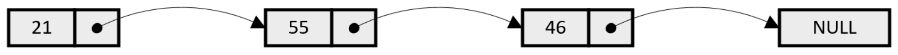
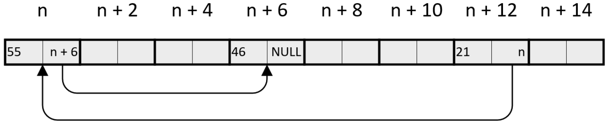
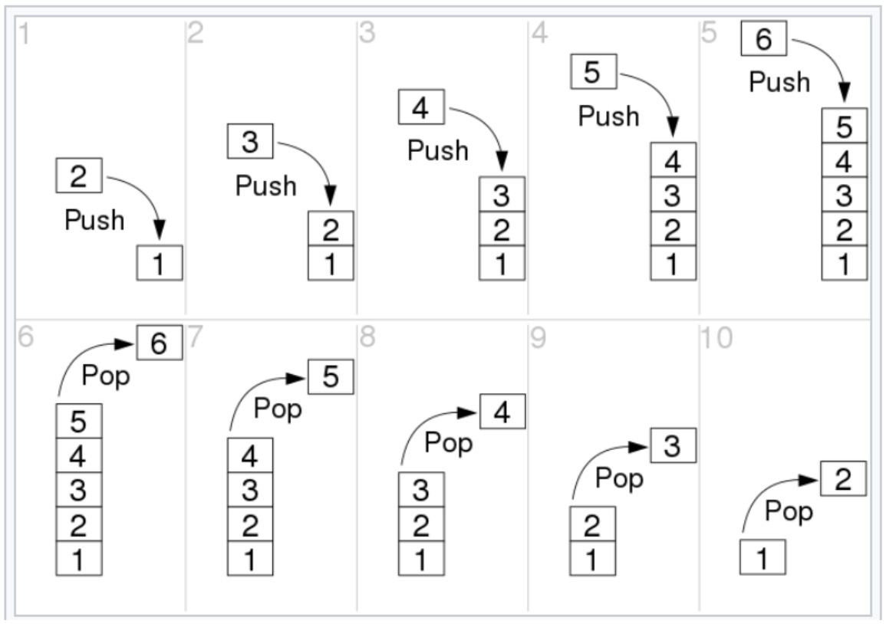
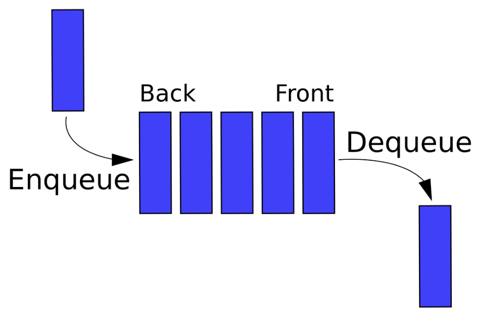
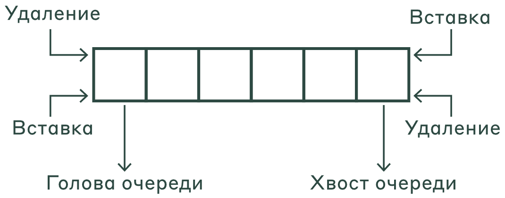

Структуры данных по реализации делятся на два вида:
Пример на C++:
int arr[6] {10, 15, 16, 8, 9, 1};
| Операция | Вычислительная сложность |
|---|---|
| Получение по индексу | $O(1)$ |
| Вставка (или удаление) в начало | $O(N)$ |
| Вставка (или удаление) в середину | $O(N)$ |
| Вставка (или удаление) в конец | $O(1)$ – амортизированная |
Для примера рассмотрим связный список из трёх элементов: $21$, $55$, $46$. Логически он выглядит так:

А в памяти может располагаться, например, так:

| Операция | Вычислительная сложность |
|---|---|
| Получение по индексу | $O(N)$ |
| Вставка (или удаление) куда (откуда) угодно, если известен указатель | $O(1)$ |



| Структура | Реализация |
|---|---|
| Динамический массив | std::vector |
| Односвязный список | std::forward_list |
| Двусвязный список | std::list |
| Стек | std::stack |
| Очередь | std::queue |
| Дек | std::deque |